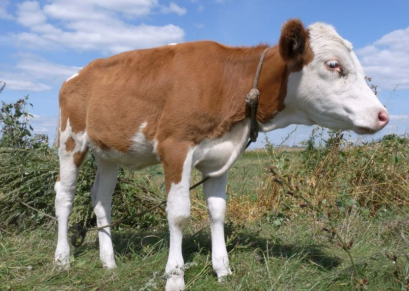
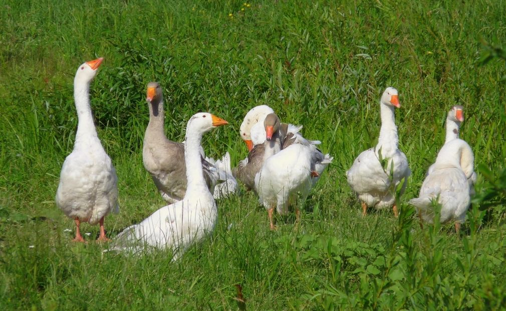
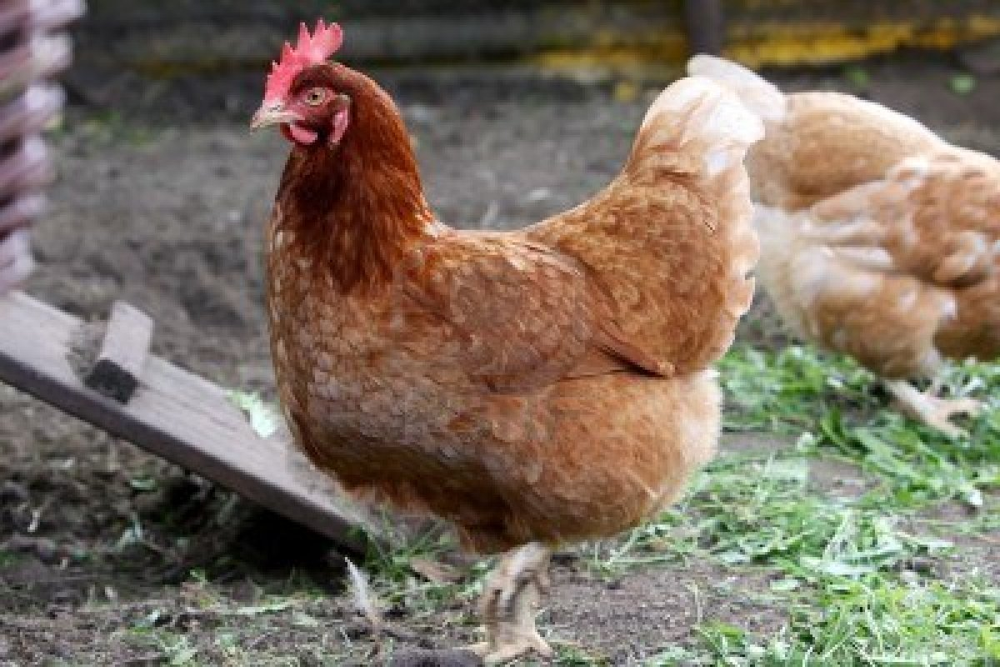
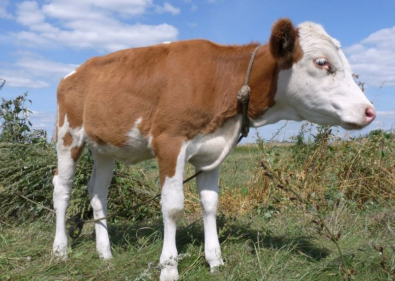
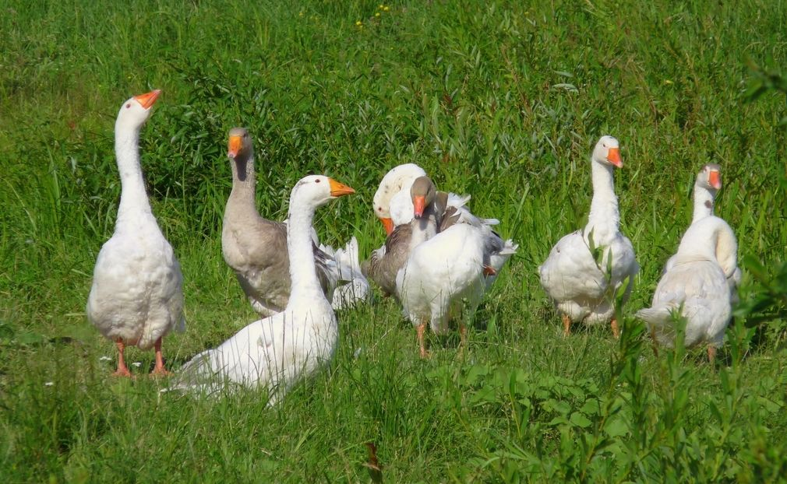
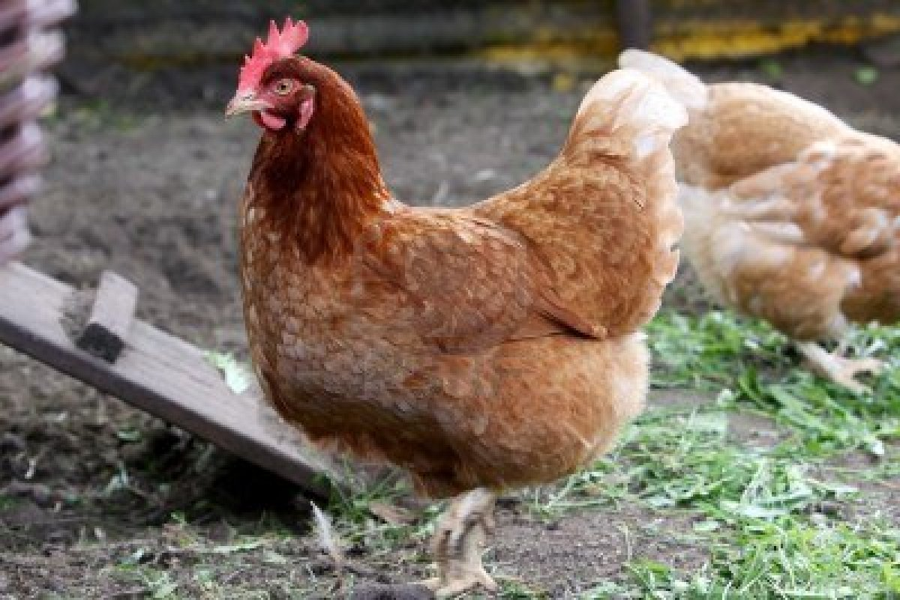
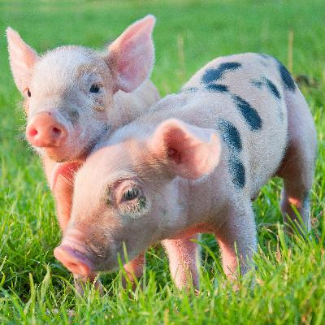
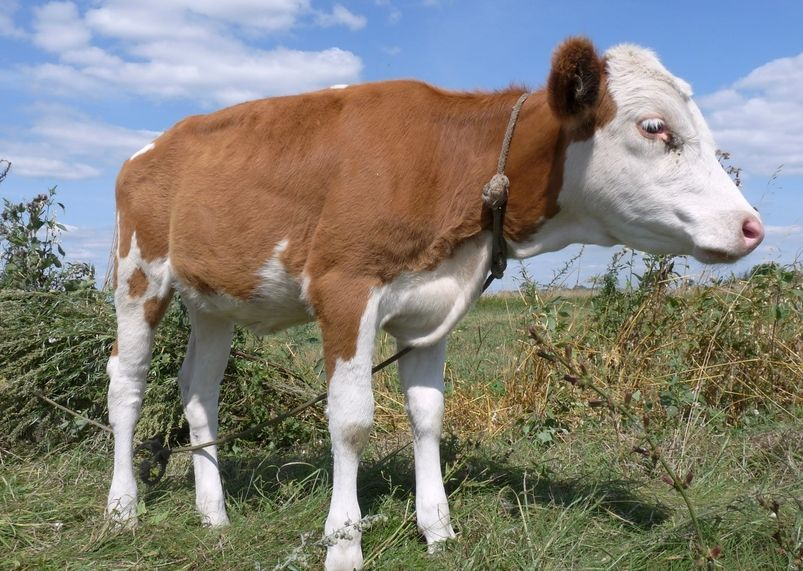
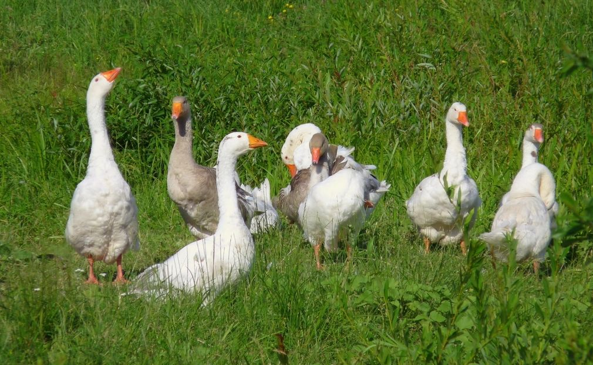
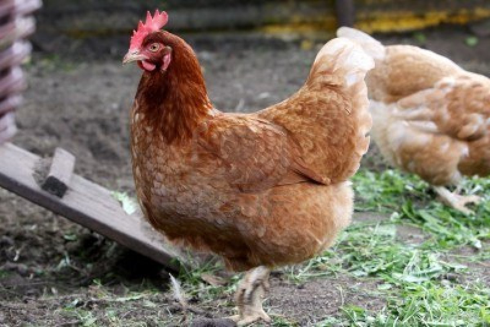

¿QUE ES UN ANIMAL DE GRANJA? Un animal de la granja es un animal familiar criado con algun proposito o fin
Los animales general mente se crian en granjas para ser usados por su lana, carnes o como animales de carga y transporte
El ambiente donde vive el animal debe estar limpio, con suficiente comida y agua . Finalmente en climas severos debe contar con lugares de alojo par resguado del climay evitar que los animales mueran.
Tabla de animales existentes |
|
|---|---|
| Animal | Cantidad |
| Vacas | 3 |
| loros | 50 |
| Patos | 10 |
| Caballos | 15 |
| Ovejas | 12 |
| Abejas | 1colmena |